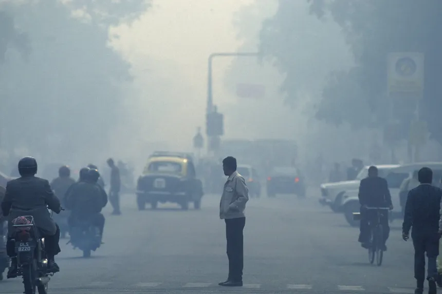
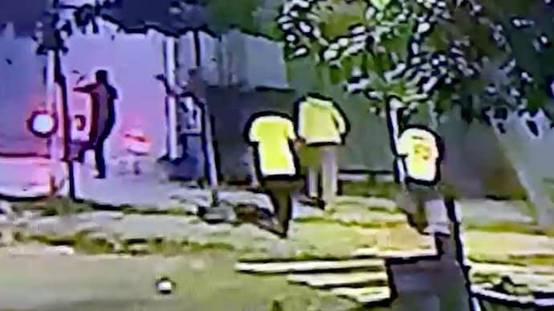

ASEAN-India Summit 2025: Modi declares 2026 as the 'year of ASEAN-India maritime cooperation'
ASEAN-India Summit 2025: Prime Minister Narendra Modi attended the 22nd ASEAN-India Summit, underlining India's commitment to strengthening its partnership with the Southeast Asian bloc. He emphasised the shared historical ties and values between the nations and announced 2026 as the 'ASEAN-India Year of Maritime Cooperation' to promote joint initiatives in maritime security and development.

Air quality worsens across north India
Number of farm fires picks up with paddy harvesting still in progress; Punjab records highest number of stubble-burning incidents in region; Haryana Agriculture Minister blames Punjab for rising pollution; traders’ body urges PM for emergency meeting of stakeholder States citing decline in business

Teen dies after boys fire crackers from iron pipe, hits her head on impact
According to the FIR, three boys were bursting firecrackers by stuffing them into an iron pipe and placing it between stones. During the process, the pipe fell, and as the firecracker exploded, it shot the pipe at high speed towards Hena, who was standing nearby. The impact caused her fatal head injury.